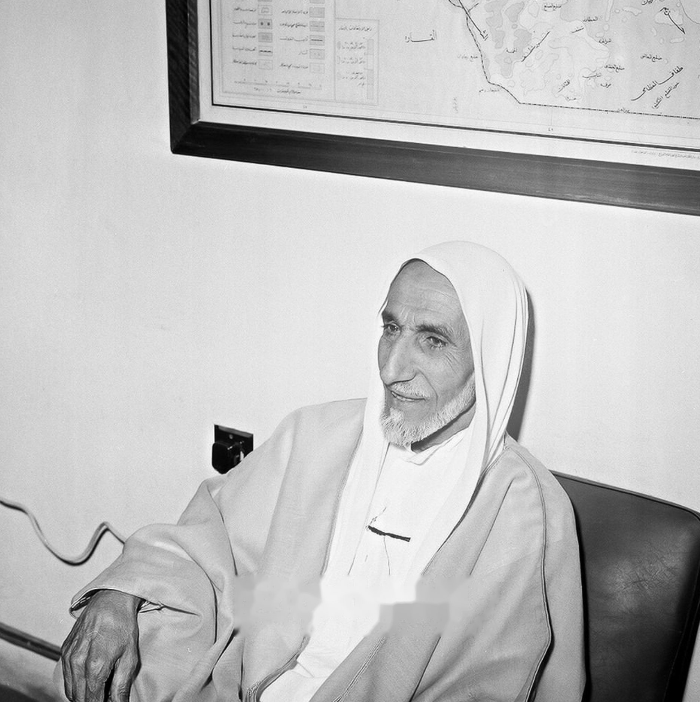
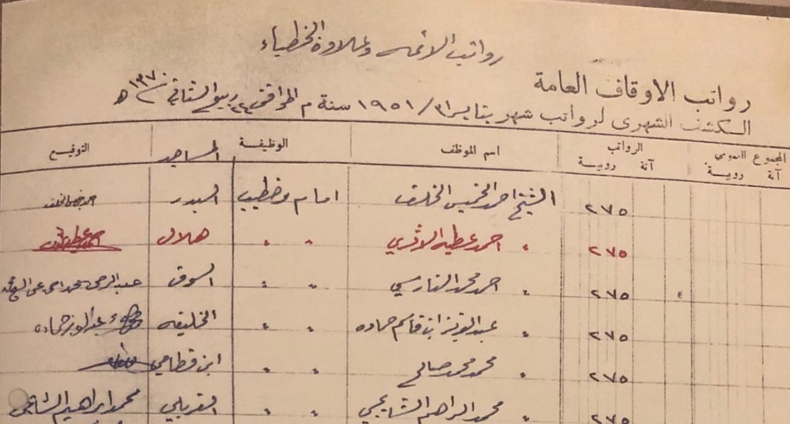
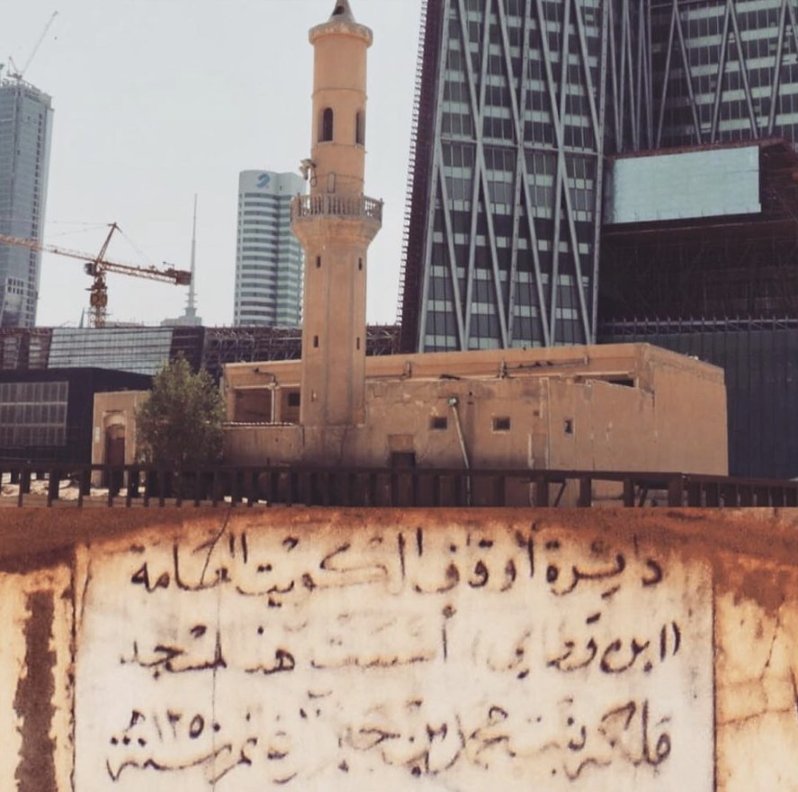
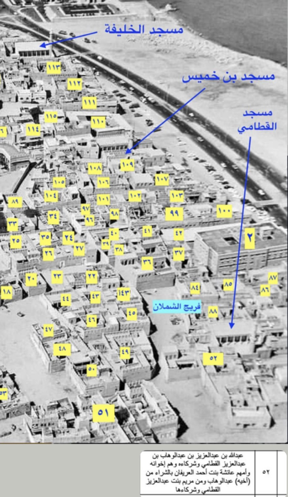

1834 to 1922
The Ibn Qatami quarter in Sharq
The family lived in Fereej Ibn Rumi in Sharq, beside the mosque that Malka bint Mohammed bin Ghanim Al-Jabr Al-Ghanim founded in 1250 AH (1834). The house of Abdulaziz bin Abdulwahab Al-Qatami stood facing it on the east side, and the old British Political Agency, Dickson House, was close by. Deeds of 1863 and 1877 and a waqf of 1885 call the mosque Masjid Sultan. The Landmarks of Old Kuwait Town says it later came to be called Masjid Al-Qatami because it stood near the house of Abdulaziz bin Abdulwahab Al-Qatami, and today it is Masjid Ibn Rumi.
The oldest deed we have that names the family is from 20 Shawwal 1279 (April 1863). It describes a house bounded on the north by the house of Abdulwahab ibn Qatami and on the west by land endowed to Masjid Sultan.
The mosque's endowments reached the town's markets. The Landmarks of Old Kuwait Town records shop no. 295 in the market of the date and barley sellers, near the Souq mosque, as a waqf of Masjid Ibn Qatami, with a deed of 1248 AH (1832) cited for the shop. Years later the Waqf Council, with the ruler's approval and the court's consent, exchanged it with the Al-Sabah family for a shop in their new building, which was then registered as the waqf of Masjid Ibn Qatami.
The waqf register of the General Secretariat of Awqaf records that on 11 October 1901 Zakiyya and Munira, daughters of Eissa bin Mahmoud, endowed half a house «in Mahallat Bin Qatami», the Bin Qatami quarter, for their descendants. On its south side was the house of «Abdulwahab ibn Qatami». The register does not give his father's name, so we cannot yet say which Abdulwahab this was.
A document of 28 Shawwal 1335 (17 August 1917), cited in the Landmarks of Old Kuwait Town, already places the mosque in Mahallat Ibn Qatami. By 1922 the whole area carried the family's name. Shamlan bin Ali bin Saif's waqf deed of that year places the mosque «in the Ibn Qatami quarter», and the Landmarks of Old Kuwait Town keeps the same name for it.




Documents for this part
- Sale deed of Shama bint Masoud's house: the house of Abdulwahab ibn Qatami on its north side
- Shamlan bin Ali bin Saif's waqf deed: Masjid Ibn Rumi «in the Ibn Qatami quarter»
Sources
- Ma'alim Madinat Al-Kuwait Al-Qadima, part 7, 2024, pages 25 to 33 (Masjid Al-Qatami), citing deeds of 20 Shawwal 1279 (1863), 29 Sha'ban 1294 (1877) and 28 Shawwal 1335 (1917) and the waqf of Rashid bin Umar Al-Fadala, 2 Rajab 1302 (1885), and quoting Adnan Salem Al-Rumi, Tarikh Masajid Al-Kuwait Al-Qadima, 2nd edition, 2002
- Ma'alim Madinat Al-Kuwait Al-Qadima, part 5, page 243
- Sale deed of Shama bint Masoud, 20 Shawwal 1279 (1863), copy in the family Drive
- Waqf deed of Shamlan bin Ali bin Saif, 1922, copy in the family Drive
- General Secretariat of Awqaf, Sijill Al-Ata Al-Waqfi, part 2: biographies of endowers 1901 to 1949, 2nd edition, 2003 (waqf of Zakiyya and Munira bint Eissa bin Mahmoud, 11 October 1901)